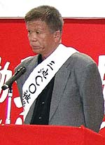

三池ＣＯ闘争と国労闘争
（録取：2005年11月6日 熊本県荒尾市における第42回三池大災害抗議集会より）

話し手の織田企喬さんは熊本県荒尾市在住。三井鉱山旧有明鉱を定年退職。現在66歳。昭和38年に起こった三井三池三川鉱
炭じん大爆発の被災者の１人でもあり、三池ＣＯ現地共闘会議の一員でもある。
以下は、そんな織田さんによる講演を録取した内容である。
こんにちわ、あいにくの雨の中を、大変、お集まりいただきまして、ありがとうございます。
ＣＯ闘争と国労闘争という、今日それぞれに闘ってきておりますこの課題については、非常に深く重いものがあります。
私は私なりにいま思うことについて、本日は語っていきたいと思います。
それは去る9月15日に、18年目にして国鉄闘争に対する不当労働行為であったとはっきりと判決がくだりました。しかし、
一番肝心な解雇権については有効だと、不当性はないという判断です。
このことは、私たちが11年前にこの爆発の責任を明らかになります。しかし、その判決の責任の理由は、爆発を引き起こ
すに至る炭じんがあったと、認められるから、坑道に責任がある三井鉱山として、坑道の維持管理に瑕疵（かし）がある、
したがって不当行為にあたるという点です。
しかし、瑕疵があったということだけで、1000人を超える殺傷をしておきながら、その瑕疵がただ慰謝料という形だけで、
その責任がほされる。国労の場合も、不当労働行為、国労の組合員であったというだけで、差別選別をして解雇して排除す
る、不当労働行為はあったけれでも解雇はいい、まさに矛盾しています。
爆発の責任もただ瑕疵があったということのみで慰謝料で終えるという、あの時我々も、勝利という垂れ幕を掲げる
のに30分ぐらいかかりました。今も覚えています。
国労の場合はせっちゅう判決ということになりました。この2つの判決の出し方が全く同じではないかと思います。いわ
ゆる司法、今日の司法のあり方、国家権力の内容がこの2つの判決の中に現れているのではないかとすぐそういうことを思い
起こします。
不当労働行為に対する責任と瑕疵に対する責任は、本当の意味での責任があいまいにされているということを感じました。
明らかに解雇権の乱用であり、爆発を惹き起こしたということは、生産第一主義に走る、そんな中で当然起こるべきして起
きた爆発の責任は、問われない。ちゃんとした鉱山保安法という法律もあるのに、これに違反したことは明らかなのに、そ
れには触れられないという、この責任のあらわし方というか、判決の出し方が全く我々と国労の判決と類似すると思い
ました。
これは我々側の弱さの反映もあるかもしれません。しかし、今さらあえて組合を批判するわけではありませんが、労働組
合と我々被災者の会の関係、国労闘争団と国労本部の関係、それは全く同じような経過をたどって行きます。あらためてこ
のことを運動の歴史的な経過の上に立ってきちっとして、受け止め、次の闘いにどうのぞむかということが、いま課題では
ないかと思います。
それはまず4党合意というのが、国労本部が提案する、それをめぐって激しい内部の闘争となって行きました。悲しいこ
とです。くやしいことです。私もテレビの画面をみながらわがごとのように感じてきました。4党合意を受け入れるという
中で、それが強行されて行く。ところが、4党から言われたことは、まず分割民営化を認めよ、それから、裁判を取り下げよ、
さらにダメ押しです、機関決定を求めてきた。この機関決定の経過はみなさんご承知のとおりです。労働者同士が相対峙す
る、また闘争団同士が罵声を浴びせ合うという悲しい結果となりました。それが組合と国労の闘争団との関係です。
我々も、20年前に、三池労組が和解を提案したときに、責任をほごにして和解することはならないというのが私たちの考え
方でした。三井鉱山も、責任の文句がひと言でも入っておれば和解はしないというのが、三井鉱山の態度です。そのときに、
我々に対して、三池労組は、今後一切面倒は見ないという機関決定をしました。ＣＯ患者は弱者です、それは恫喝に値します。
ですから、裁判継続するのは32名にとどまったけれども、いやいやながら、寄らば組合の大樹の影と思われた方もたくさん
おられました。
国鉄の闘争団においても4党合意が機関決定とされていく中で、裁判継続する者は、毎月2万円の補助金をカット凍結しま
した。これは大変です。敵が兵糧攻めをするのならわかるというのではありませんが、組合がそういうことをする。4党合意
の受け止め方も提案に対して国労本部の即応は早かった。ひとつ下がればふたつ下がる。三つ、ダメ押してきます。それに
応じて団結権に持っていきます。あまりにもあきらめるのが早過ぎる。遅ければいいというものでもありませんが、猫も、
ネズミに噛まれてはただでは下がりません。前足で抵抗します。しかし、あの4党合意の経過の中で、闘争団に相談をしないで、
いきなりそのやり方が、組合民主主義から考えてどうなのかと、大きな問題点のひとつ。そして数の多数決で決める。機関
決定とは、誰のための決定なのか、ということを組合民主主義の上に立って考えた上で決定されるべきものだと思います。
組織決定が悪いとは言いません。三池労組との多少の違いはあっても、我々と国労闘争団との関係は、全く同じような関係
で来たんではないかと思います。
そこでこれまでの問題についてどう考えて行くのか、解決していくのか、かって三池労組の歴史のなかで63日というスト
ライキの賃金闘争があり、戦後最大の炭労全体でのストライキがあり、その1年後に113日の首切り反対闘争があり、その賃
金闘争が終わったときに、保護生活をしている人は少なかった。
いま、国労がたどってきた、本部がたどってきたあの4党合意のいきさつを、改めて組織的に率直に自己批判の上に立って
今後の国労の闘争に構えていくべきではないかと。
113日の首切り反対闘争は、半分以上がおそらく希望退職に応じて行き、約半数の人が残って闘い、勝ち取った。そのとき
の三池労組のスローガン「残るも地獄、去るも地獄」、残った者と、去る者との関係はどうであったか、組織と組合員ひとり
一人、個人の関係はどうであったか。職場分会、地域分会、家族、主婦会、その関係は多岐におよんでいます。それは次の
闘いに備えるために、如何なる弱点も心して（・・・・）。
そういう提案に反応したのが三池労組であったわけです。そういう経過をみた上で三池闘争を迎えるわけです。で、私は
そう簡単にはくるとは思いませんけれども、国労がいま求められていることは、あの経過を認めたのですから、これを率直に
受け止め、組織的に各級機関が大衆とともに自己批判を討議を行いやってきたのです。
闘争団も二つに分かれております。お互いに闘争団同士として、やり合ってきた経過もあるでしょうが、それはなぜ出て
きたのか、なぜ起こったのか、もう一度スタートの地点に帰って、これからの闘い、次の闘いに備えて行くことが本当の意味
での闘いになるんではないかと思います。
賃金闘争の中で書かれた言葉ですが、最後のくだりに、「大衆の中で徹底的に討議され、具体的な闘争力となったときのみ、
63日の闘いの経験が生きてくる」と書かれております。
また、その自己批判が各級機関がどこまで誠実に負い、大衆の中におろすか、お互いがいがみ合うのではなく、敵は必ず
我々の弱点にくさびを打ち込んでくる、それが4党合意であり和解であったと。そのことを踏まえて、今後の闘いにのぞむため
に、切り崩しや迫害に耐えうる組織と、幹部を鍛えることが次の闘いにつながっていく。幹部を変えることと、大衆の力を変
えること。今国労の中に、もちろん我々の中にもありますが、次の闘いを闘うために私たちなりに考えたことであります。
最後に、いま、塚本さんが命の危険にさらされています。しかし、あわやと思いましたけれども、また、起死回生の命を取
り戻し、今日もなんとかがんばっておられます。生命力の本当の強さを、人の生命力の強靭さをあらためて私も感じます。
それだけに人の命の重さを考えていきたいと思います。
宮嶋さんのお母さんが「息子がこうして生きているのも三井鉱山に抗議しよるんだ」と言われたことを忘れることができま
せん。そのことを塚本さんの見舞いの中でも感じました。どうかこれからも生ある限り、この問題に携わって行きたいと。
皆さんのご協力をこれからもお願いいたしまして、私の話を終わらせていただきます。ありがとうございました。
BACK NEXT
|